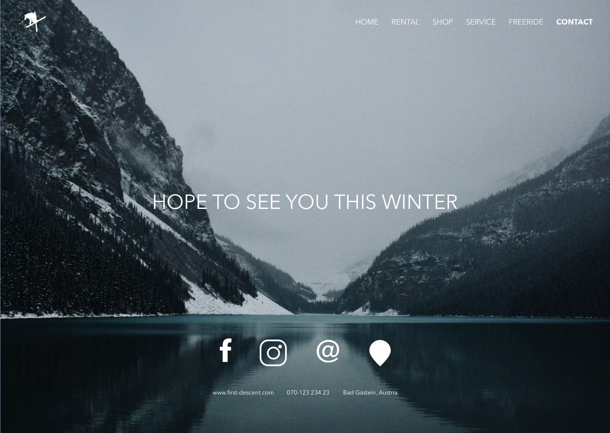
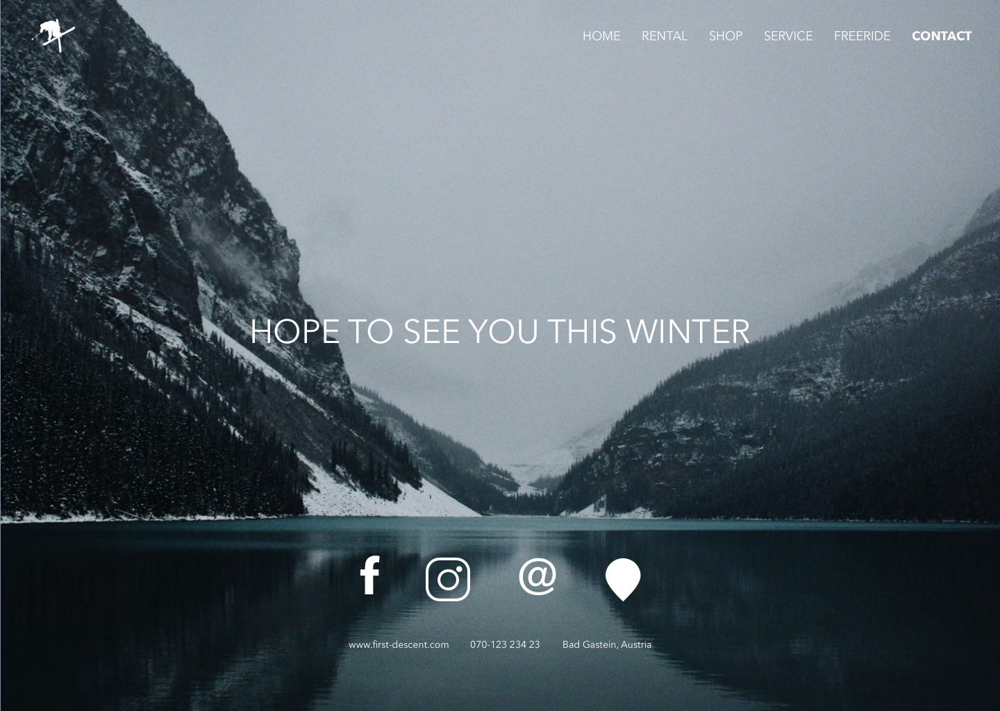

First Descent
First Descent is a ski- and board rental that I worked at during a season of 2015/ 2016. During my season I designed and developed a website for the shop which increased equipment rental done over the web.
My role
My role was to design and developed a website using different methods and technical skills. I analyzed the current design to figure out what was working and not. Thereafter I created flow charts, storyboards, wireframes and a hi-fi prototype before I developed the site with HTML and CSS.
Approache
The website was developed according to conventional user interface design guidelines. It should be accessible to all users, responsive on different devices and easy to navigate. The interface should have cohesive graphic profile with an adventurous vibe and freeride skiing feel.
Solution
The website consists of six html pages linked to one style sheet. It's a flat hierarchy which are easy to navigate with the help of the global navigation bar on the top of the page. The most important content are placed in the beginning of the page, easy for users to find. Colors and fonts are consistent through the website. Images are decorative and illustrates an adventures feel.
- Client:
- Services:
- Year:
- First Descent
- UI, UX, web development
- 2016
 
